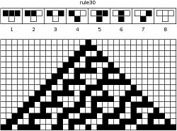
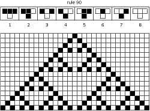

Audacity Support Forum /
Audacity and Nyquist /
Nyquist Reference Manual /
Nyquist Examples and Tutorials
Cellular Automata & Nyquist /
Cellular Automata Example /
View example: cell-aut.lsp
Ann Lewis 12/05/02
Sound example: cell-aut-demo.ogg
Cellular Automata
A cellular automaton is a collection of cells on a grid. Each cell evolves according to a set of rules based on the states of adjacent (or nearby) cells. One-dimensional, "elementary cellular automata," are represented by a single row of cells/states, each can have value 0 or 1. For a graphical automaton, 0/1 corresponds to black/white pixel.
Two-dimensional: cells depend on at least four neighbors. These are capable of simulating a Turing machine for some configuration of about 200,000 cells (Gardner 1983, p. 227). Translation: cellular automata are very powerful.
Elementary Cellular Automata
are the simplest class of one-dimensional cellular automata. Elementary cellular automata have two possible values for each cell (0 or 1), and rules that depend only on parent and parent neighbor values. The evolution of an elementary cellular automaton can completely be described by a 2D table, where entry (i, j) corresponds to state j at generation i.
Since there are 2*2*2 = 23 = 8 possible binary states for the three cells neighboring a given cell, there are a total of 28 = 256 elementary cellular automata.
Example: One-Dimensional
Steven Wolfram enumerated all possible elementary cellular automata and he calls this particular rule set Rule 30.
 
Rule 30 is of special interest because it is chaotic (Wolfram 2002, p. 871). This rule is used as the random number generator used for large integers in Mathematica (Wolfram 2002, p. 317). Rule 90 (next slide) is also of interest because it generates fractal patterns
What does this have to do with Nyquist?
Ever wonder what fractal patterns would sound like in music? Using cellular automata is a very efficient way of generating interesting musical patterns, because you only need to keep track of two generations at any given time. So I decided to implement a cellular automata feature in Nyquist
Cellular Automata within Nyquist
Recall the one-dimensional array of states, each of which can be either 0 or 1. The musical analogy for this idea is: instead of a row of states, you have an array of sounds. If a state has a value of 1, this sound is “turned on”, if 0 its “turned off.” Also, assume you have chosen some method by which you can combine turned-on sounds.
Example
Osc 60 - Osc 65 - Osc 67 - Osc 70 - Osc 75 - Osc 76 - Osc 79
Here is a very simple array of sounds. In this musical cellular automata structure, we choose the combining function to be SUM, for the sake of simplicity. Now if states 2,3, and 6 are turned on, we would get the Nyquist sound (sum (osc 65) (osc 67) (osc 76)), which is just a simple chord. The evolution of this automaton would be a sequential progression of chords.
Implementation
I have implemented a cellular automata package in Nyquist that allows you to use any one-dimensional automaton on any array of sounds, using any combining function on the activated sounds.
Usage: (cell-aut <num iterations> <combining function> <sound list> <update rule>)
Since automata are differentiated by their evolution, or row update rules, you can specify the auto-maton you want to use just by specifying the update rule. The update rule is simply a function that takes in 3 (t/nil) values, and returns t or nil. The three input values will be the values of the cell’s dependencies, and the output is the current cell’s value.
Example Update Rule
(defun wolfram-rule-30 (arg1 arg2 arg3)
(if (and (eq arg1 t) (eq arg2 t) (eq arg3 t)) nil)
(if (and (eq arg1 t) (eq arg2 t) (eq arg3 nil)) nil)
(if (and (eq arg1 t) (eq arg2 nil) (eq arg3 t)) nil)
(if (and (eq arg1 t) (eq arg2 nil) (eq arg3 nil)) t)
(if (and (eq arg1 nil) (eq arg2 t) (eq arg3 t)) t)
(if (and (eq arg1 nil) (eq arg2 t) (eq arg3 nil)) t)
(if (and (eq arg1 nil) (eq arg2 nil) (eq arg3 t)) t)
(if (and (eq arg1 nil) (eq arg2 nil) (eq arg3 nil)) nil))
Example Update Rule, con’t
The previous slide corresponds with this visual implementation The user can create their own up-date rules 88 of the possible 256 update rules are known to be fundamentally inequivalent (Wolfram 2002, p.57).
Example Music Created Using Cellular Automata
These examples are very simple: The sound arrays are just arrays of oscillators. The samples use Wolfram’s fractal rule (90) and Wolfram’s chaotic rule (30) Combine function is just SUM.
Future Work
I plan to explore more complicated examples, including cellular automata of harmonics, and cellular automata of cellular automata. How much musical structure can a cellular automaton describe? Music that is pleasant to the human ear is sparse over the set of all possible tone combinations over a given range of tones; cellular automata currently does not have this property. Can it be added?
Cellular Automata & Nyquist /
Cellular Automata Example /
View example: cell-aut.lsp
Audacity Support Forum /
Audacity and Nyquist /
Nyquist Reference Manual /
Nyquist Examples and Tutorials